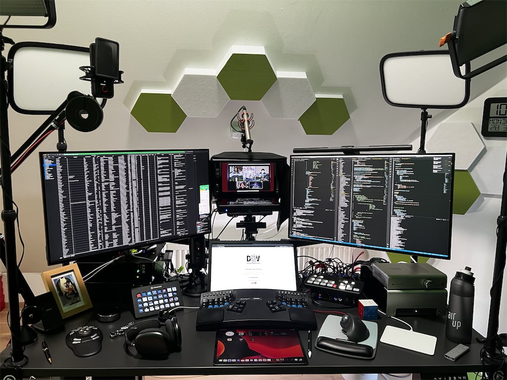
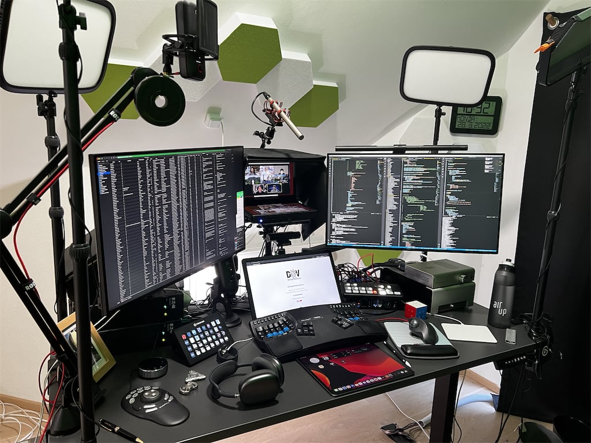
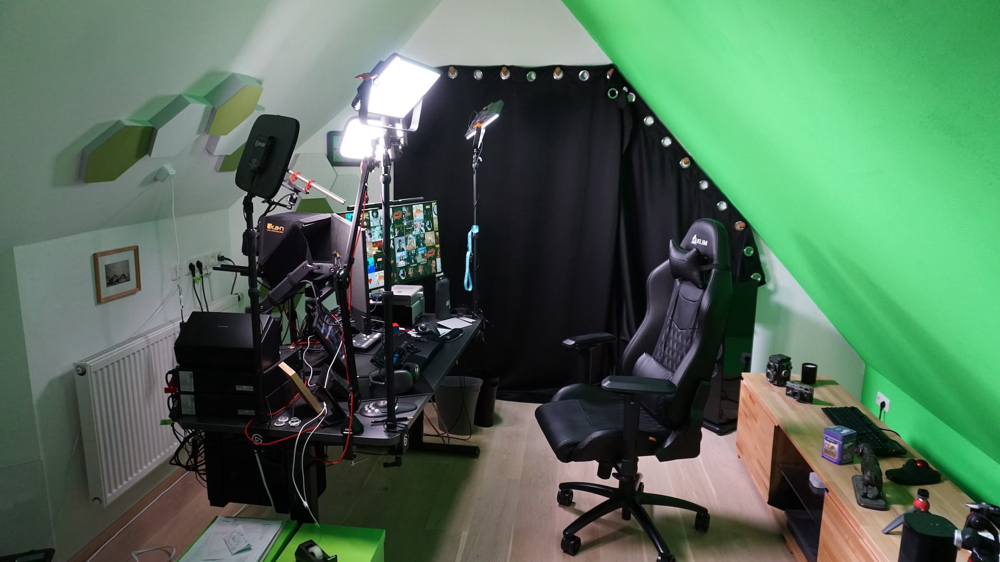
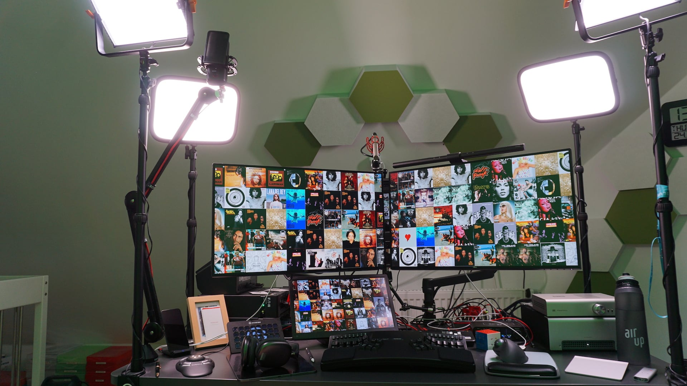
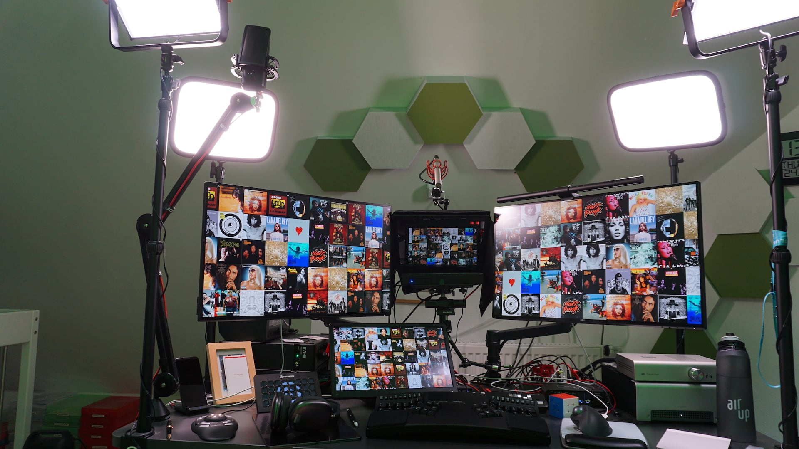
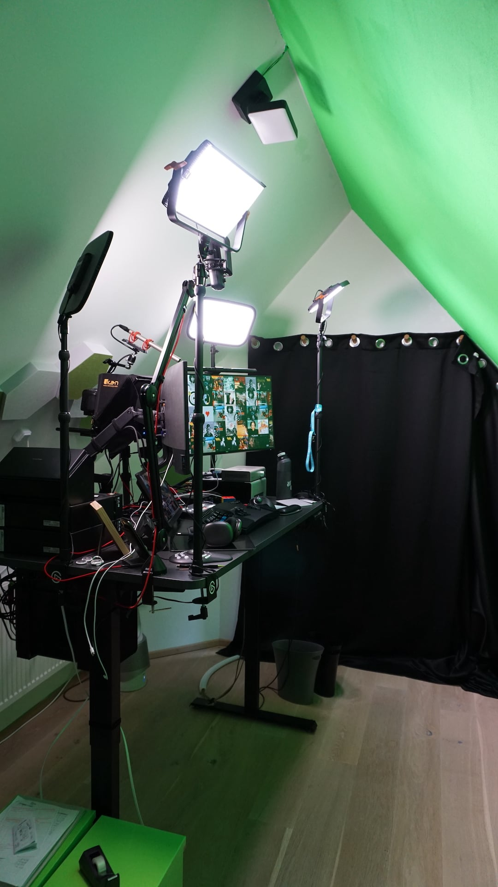
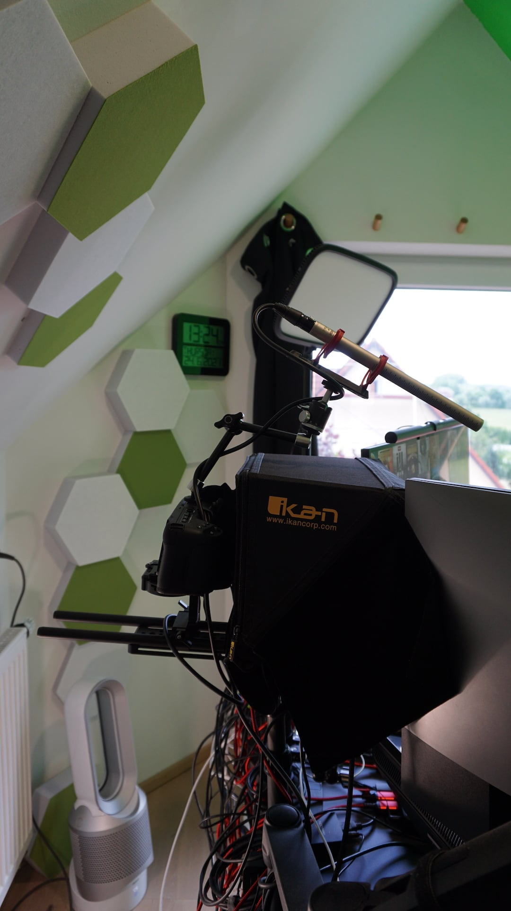
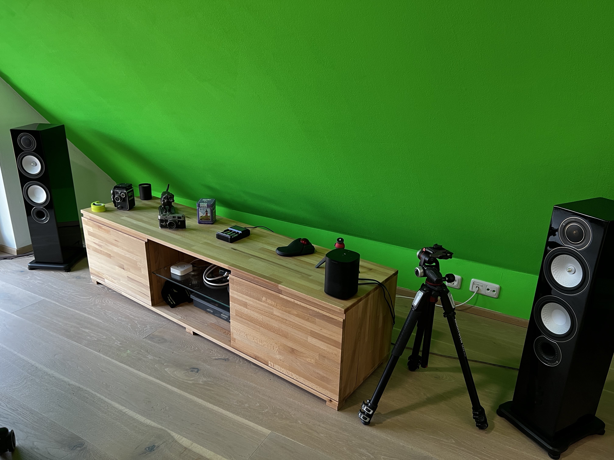

I love working and spend a lot of time at my desk - investing in the best setup possible, constantly improving, has become a passion.
This setup enables me to:
- have a very professional online appearance, live or for recordings (IRL I used to spend a lot on suits, so that free'd up budget 😇 )
- increase my productivity / output drastically
- make me feel like a ninja.. or having my own Batcave station... geek joy 🤓
While my setup might be seen as an overkill by most, the investment is more than worth it, for me. To each their own :)
Keeping in mind my computer use is wider than most:
- Business
- Online Sales Demos
- Programming (Python) / 100+ scripts (always at least one running in the background)
- Database Management
- Graphic Design (eg Sales graphics)
- Video Editing (eg Sales videos)
- Hi-Fi (lossless playback)
Pictures

3 monitors configuration for deep work:

“Open” configuration with 4 monitors (teleprompter) for online meetings or video recordings:


Standing configuration - default for online meetings where I lead, and part of the working day:

View of the teleprompter setup with Blackmagicdesign Micro Studio Camera 4k, IKAN teleprompter and Rode NTG3 shotgun mic:

Hi-Fi loudspeakers:

Setup
Focus on Controllers
I am a fan of using the right tool for the job.
Case in point, I use 7 different types of input control devices on my desktop! 😁 And feel handicapped without them now.
Highly recommend each, battle-tested.

From left to right:
- Contour ShuttlePRO v2 for video editing of sales demo/promo videos (eg with Screenflow)... and gaining great playback controls when watching meeting recordings, ie skip, pause, fast forward, etc.. (much more efficient than attending live :)
- iPad with GoodNotes (app) + Paperlike (screen protection with a paper feel) for notes-taking, sketching ideas, etc.. App + screen protection make it a great experience, without them it does not work for me.
- Elgato Streamdeck if I had to choose only one in this list, it would be this. I have 300+ automations behind this, and keep adding more - brings your sales demos and daily work to another level. Designed by/for gamers and streamers originally. Amazing for business purposes too :) "Programmable keypad" doesn't do it any favours. Automate almost anything with it.
- Keyboard Kinesis Advantage2 One year into having switched to it, and I can’t imagine working without it anymore. Steep learning curve, but amazing ergonomics and efficiency, especially with the 2 thumb keys clusters. Normal keyboards feel weirdly conceived and slow now :)
- BlackMagicDesign ATEM Mini to control your appearance and extend your possibilities during online meetings. See if your audio/video is live, hardware buttons to mute/unmute, show/hide, share your iPad screen as webcam, and much more. Designed for live streaming originally.
- Logitech trackball with programmable keys trackball makes navigating a large screen estate (eg my 4x screens) a breeze + sifting through emails and browser tabs only with the mouse thanks to the programmable keys (mark read, delete, etc..)
- Apple Magic Trackpad for navigating large images or documents, especially in apps like Adobe Illustrator, Photoshop, etc..
Full Home Office Setup
Here is a detailed list of the components of my setup:
Webcam backup: AVerMedia from AVerMedia Microphone 1: Yeti from Blue - Webcam: C920 HD PRO from Logitech - https://www.logitech.com/en-gb/products/webcams/c920-pro-hd-webcam.960-001055.html Keyboard: Das Keyboard 4 Professional for Mac from Das Keyboard - https://www.daskeyboard.com/daskeyboard-4-professional-for-mac/ Light: KEY LIGHT from Elgato - https://www.elgato.com/en/key-light Audio: M2 Audio Interface from MOTU - https://motu.com/en-us/products/m-series/m2/ Microphone: Wave:3 from Elgato - https://www.elgato.com/en/wave-3 Controller: GoXLR from TC Helicon - https://www.tc-helicon.com/product.html?modelCode=P0CQK Trackball: Wireless Large-size Trackball from Elecom - https://elecomus.com/web/product/3271/ Audio: ASGARD from Schiit - https://www.schiit.com/products/asgard Microphone: Microphone: NTG3 Shotgun from RØDE - http://www.rode.com/microphones/ntg-3 Audio: VIDAR from Schiit - https://www.schiit.com/products/vidar Audio: Airpods Max from Apple - https://www.apple.com/airpods-max/ Controller: ATEM Mini from Blackmagic Design - https://www.blackmagicdesign.com/products/atemmini Controller: iPad Pro from Apple - https://www.apple.com/ipad-pro/ Keyboard: Kinesis Advantage 2 from Kinesis - https://kinesis-ergo.com/shop/advantage2/ Trackball: MX ERGO ADVANCED WIRELESS TRACKBALL from Logitech - https://www.logitech.com/en-gb/products/mice/mx-ergo-wireless-trackball-mouse.910-005179.html Light: Philips Hue from Philips - https://www.philips-hue.com/en-gb Controller: ShuttlePRO v2 from Contour - https://contour-design.co.uk/products/multimedia-controller/shuttlepro/ Desk Accessory: Speedcube from - Controller: Streamdeck for business users: game changer from Elgato - https://www.elgato.com/en/stream-deck Teleprompter: Teleprompter: PT-ELITE-PRO from IKAN - https://ikancorp.com/shop/teleprompters/ikan-pt-elite-pro-elite-universal-large-tablet-surface-pro-and-ipad-pro-teleprompter/ Computer: Mac Studio from Apple - https://www.apple.com/mac-studio/ Monitor: 1x Beetronics 1080p display for demos/sharing/screenshots/video recordings from - Monitor: 1x cheap 1080p display for teleprompter from - Monitor: 2x Dell UltraSharp 27"4K USB-C Monitor U2720Q (3840 x 2160) from - https://www.amazon.de/-/en/Dell-U2720Q-Inch-3840-Anti-Glare/dp/B084KX3HQ8/ref=sr_1_6 Camera: Blackmagic Pocket Cinema Camera 4K from Blackmagic Design - https://www.blackmagicdesign.com/uk/products/blackmagicpocketcinemacamera eGPU: eGPU: Razer Core X + PowerColor Red Dragon w/ RadeonRX 570 from Razer - https://www.razer.com/gaming-egpus/razer-core-x/RC21-01430100-R3U1 Chair: KLIM eSports from KLIM - https://klimtechs.com/shop/gaming-chairs/klim-esports/ Desk: LeetDesk Classic Gaming Desk from Leetdesk - https://leetdesk.com Desk Accessory: LX Desk Monitor Arm (matte black) from Ergotron - https://www.ergotron.com/en-gb/products/product-details/45-241#?color=black&buynow=0&attachment%20option=2-Piece%20Clamp Computer: Mac Mini from Apple - https://www.apple.com/mac-mini/ Desk Accessory: MULTI MOUNT from Elgato - https://www.elgato.com/en/multi-mount-system Camera: α5100 E-mount camera with APS-C sensor from Sony - https://www.sony.co.uk/electronics/interchangeable-lens-cameras/ilce-5100-body-kit
Thought it might help someone.. 🤓